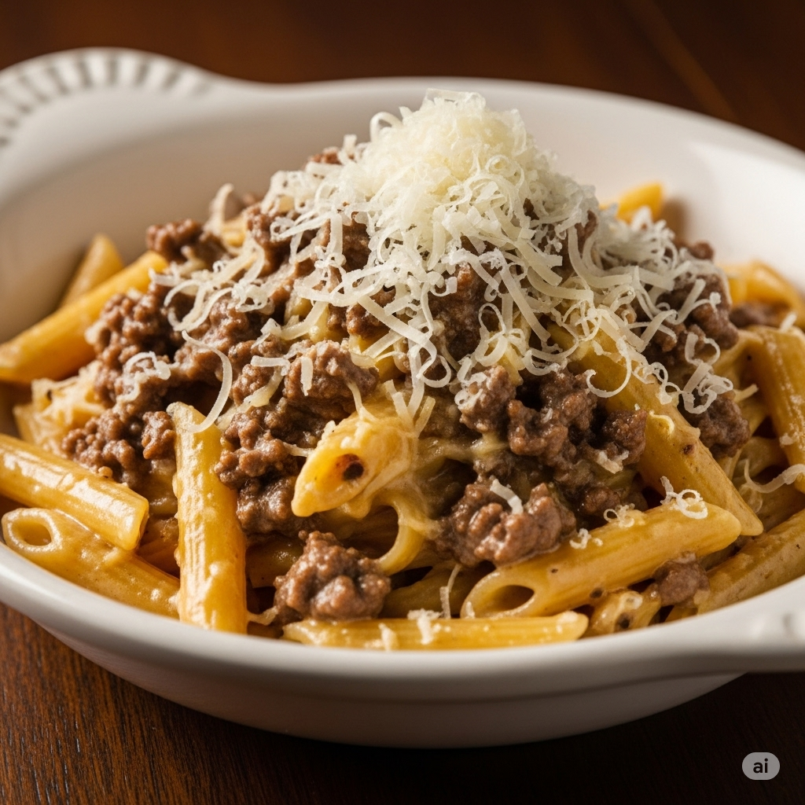

This is a recipee in how to make my version of pasta with ground beef.

This is my favorite pasta dish in the entire world. If you ask me why it is because is the most easy to make (at least for me)
Ingredients
250 grams of Pasta
Water
1 pinch of Salt
125 grams of Ground beef
1 pinch Black Pepper
1 pinch Paprika
3 cloves of Garlic
1 teaspoon Ginger
3 Tomatoes
1 Onion
1 table spoon Butter
parmesan cheese
Instructions
Boil water in a pot, put a pinch of salt in the water,when the water is boiling add the pasta and wait around 7 to 8 minutes, after that rince the pasta and add the butter so it doesn't stick
put 3 tomatoes, 1 onion and 3 cloves of garlic in a blender mixed with water, wait until the seasoned ground beef is cooked to mix it together
With the ground beef add salt, black pepper, paprika, ginger, and mix until everything is together and put it in a pan, wait until it goldens and add the sauce, boil it until the texture thickens.
after this you can get the pasta in a dish mixed with the ground beef sauce and add parmesan cheese.